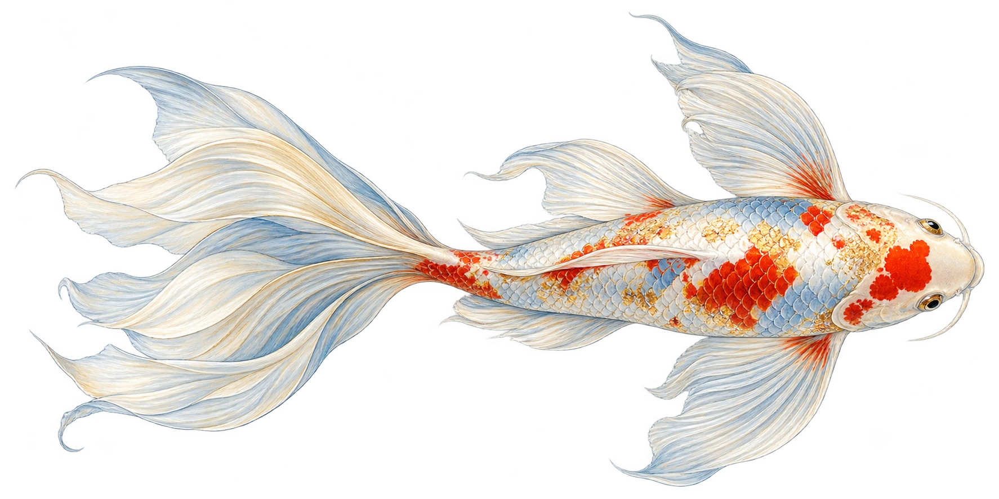

01 / A FRESHWATER WORLD
02 / BUILT TO MOVE
GOWITH IT.
03 / LIFE GOES ON
MAKESPACE.
01 / FRESH WATER
A worldwithin a pond.
Ornamental carp, selectively bred in Japan.
Now at home in ponds and water gardens worldwide.
02 / THE ART OF MOVING
A wave of life.
Body and tail drive the swim.
Fins bring balance and direction.
AN OMNIVORE’S MENU
Plants.
Algae.
Insects.
03 / TIME TO GROW
25–35
years of possibility.
Typical lifespan with proper care.
According to San Diego Zoo.
TINY BEGINNINGS
Life, all over again.
Externally fertilized, sticky eggs cling to plants.
From eggs to fry. A new generation begins.
KEEP YOUR CURIOSITY IN MOTION
Thanks for drifting.
Created by Mayank Sarasiya, with AI assistance
Original koi artwork generated with OpenAI.
A painted Canvas 2.5D experience.
N° 01 / BUTTERFLY KOI
